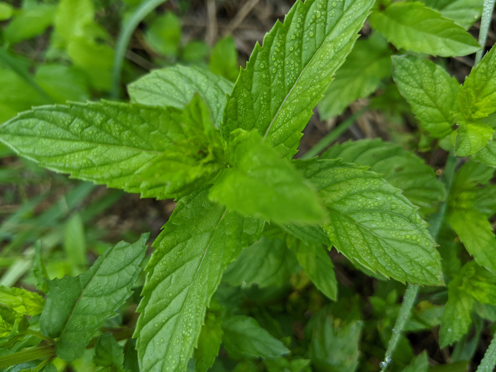

ose
You can read my initial assessment or log on the OSE wiki.
I arrived nearly a month early to Factor e Farm to participate in the OSE 2021 apprenticeship, I was the first apprentice there.
Motivation
Open Source Ecology is the only organization I know of that really understands how pivotal integrative open source hardware fabrication is to humanity's future. I lived in rural Missouri because solving housing for indie game developers is an effective first step on that journey. Independent creators have always financially struggled on a massive scale. With rising cost of living this struggle is manifest in pressure to use proprietary software tools, to adopt unethical business strategies, to hurry up and commercialize their work or get a real job in order to survive.
Housing is a human right that can and should be made universal by technology, not an investment. I think it's crucial that people are able to understand the world around them (both manmade and natural), in this sense open source hardware is empowering because it allows everyone to play a role in the technical engineering decisions of their environment. Understanding is a prerequisite to freedom.
The Farm
I have wept in joy and sorrow for the potential of this pocket universe. Wandering pleasantly lost in the wind waved miracle orchard; gazing stoically at digital blueprints and rusting relics.